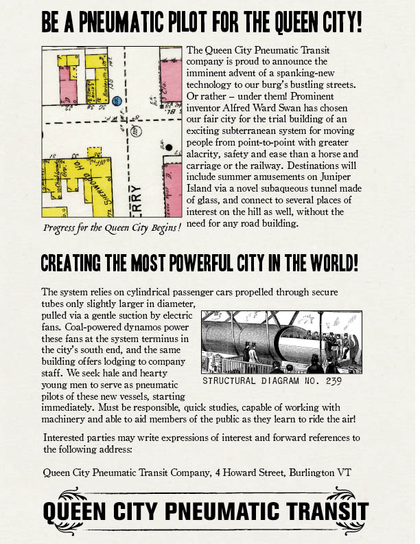

Liminal Editions Presents:
An imaginative inventor furthers local developments on a new model of people-moving.
The Inventor - Union Station - 10:00am - April 10, 1893
Tapping a pencil on the armrest of the train seat, the man pores over his plans. He is beyond determined to see them actualized. The door to his cabin slides open and a man thrusts his head in “Queen City in five minutes, Sir!” The man nods and gathers up the documents. “Thank you.”
Alfred Ward Swan was an inventor’s inventor. He loathed even the idea of rest and by the age of 28, Mr. Swan held several patents to noteworthy inventions. In his youth, he was a carom billiard enthusiast. His most whimsical early invention was a set of vulcanized rubber billiard balls used for a nine-pocket table. This frivolous invention led to his greatest achievement. Perhaps one of the greatest inventions of the Gilded Age. While trying to perfect an internal ball-return system within a billiard table, Swan experimented with several modern mechanical advantages. Suction and propulsion techniques could quickly and efficaciously return the cue ball on a faulted play. His claim, “Little more is required than a tube, a ball, and a fan!” to his fellow players, shifted something within him. What if he were to use this principle on a larger scale?
Being a regular in the gaming parlors, Swan secretly appealed to several prominent men to lend use of the land beneath properties adjacent to New York’s City Hall. His intention – to experiment with a “Pneumatic Tube Transit System”. Wholly dedicated to the success of his project, a grand solution to New York City's busy streets, Swan sold his kidney to finance the initial leg of the work. Once ground was broken in the winter of 1869, providence moved in and the project was realized within a year’s time.
In the February of 1870, Swan unveiled the block-long transit system to an awestruck public. The elegant station, equipped with a player piano, a goldfish-stocked fountain and — of course — billiard tables, invited riders into the footloose and fancy-free joyride of pneumatic travel. Swan's invention was a the talk of the town in the Big Apple. In its first six months of operation, 200,000 riders each paid a quarter to enjoy a clean, quiet, smooth ride – the future of travel.
It seemed as though Swan's invention would succeed when legislation was initiated to implement the system city-wide. However, proponents of a plan to lay elevated railway tracks across Manhattan were threatened by Swan's efforts. Despite their political influence, Swan was prepared to fight to the bitter end. But the bitter end came in a manner he did not expect. September 18, 1873 marked the beginning of The Long Depression. Swan's investors remorsefully pulled backing from the project. The tunnels of the Pneumatic Tube Transit System were bricked over, creating a crypt for Swan's broken dream.
The Queen City Pneumatic Transit System explained.
The Inventor - Burlington - 11:00am - April 10, 1893
Resolved to redeem his tubal genius, Swan negotiated with the high officials of Queen City to implement his visionary transit system. The proposal came with a promise to carry forth Queen City as the City of The Future. Not only would the tube system be subterranean, it would be subaqueous. Shaped like a crescent, the tube’s route included approximately two miles of transparent tunnel for riders to view the depths of Lake Champlain while traveling to the popular amusement park at Juniper Island. The system provided timely, safe travel between six key locations –
- Union Station
- City Hall
- Battery Park
- Juniper Island
- Crescent Beach Country Club
- Queen City Pneumatic Terminus
In which a conductor decides on a career switch.
The Pilot - Union Station - 3:00pm - September 15, 1893
Benjamin Isham was tired of railroad work. He had been a conductor on the Island Line Railway for the past three years, and found it continually grueling, inflexible and stifling. Sure, it was fun to go out on the middle of the lake via a causeway. At times, it felt like a magical place between the water and the sky. But that didn't make up for the hidebound rigidity of his supervisors, the lack of upward mobility, or the very low rate of pay. He was looking for a change.
While reading the newspaper on a bench in Battery Park — during one of the extremely rare afternoons he had off from what amounted to a seven-day work week — Benjamin saw an ad for an exciting new prospect. A local company was seeking pneumatic pilots to undergo training on a new system of transport. Piloting and even maintenance sounded exciting, if it were in a new industry where he could make his mark.
A ship's horn sounded offshore, and his thoughts turned to Prudence Dawson, a girl he fancied. She worked as a full-time stewardess on the steamship Ticonderoga now coming into port. Thinking of his sweetheart Prudence and the way in which their unspoken mutual desire to marry had been hampered by the impecunious state of his bank account — all directly as a result of his current employment circumstances — he decided he would meet her as soon as her ship docked to discuss this new opportunity. He stood up, the paper clutched in his hands. A pneumatic pilot! Wouldn't that be something?
Sweethearts bicker before the fat lady sings.
The Pilot & The Stewardess - Howard Opera House - 6:53pm - July 13, 1894
Benjamin and Prudence were thrilled to be going to the opera — a rare treat facilitated by the uptick in Benjamin's fortunes resulting from his new occupation. The previous fall he had entered training to become a pneumatic pilot for what promised to be a thrilling new invention run by Queen City Pneumatic Transit. On the eve of the transit system's maiden run, the couple had decided to treat themselves to an outing together, to see and hear Jenny Lind, the Swedish Nightingale, when she made a tour stop on the shores of Lake Champlain en route to thrill Montréal.
Prudence was dressed in her finest frock and wore it well, but she looked slightly uneasy as they took their seats and waited for the curtain to rise. She had something on her mind, as it turned out. "Ben, I had a very disturbing dream last night. True, I was sleeping in my berth on the boat again, and the Ticonderoga is not the most steady of beds on a windy evening, even in dock. I can't remember all of the dream, just the feeling of it. And I believe my dream was a premonition that the tube system could be dangerous under certain circumstances. Something had happened to you and your passengers, too...and I had a feeling that...well, it was very frightening." She pursed her lips and screwed up her courage to continue. "Ben, I was afraid in the dream that you were drowning! It was so real!"
Ben guffawed and gazed at her adoringly. "Oh, Prue — I know you're capable — you basically run that boat's service staff — but you're so sweet, and so silly sometimes! I bet you can chalk this up to something your family gets from your mother's Irish side. Didn't you tell me your grandmother had once heard a banshee in the Old Country? I am sure the system is safe. We pilots have been training for many months, and we've run upwards of twenty test rides during that time, extending the run as soon as each section of the tube was built. And I myself witnessed the divers visiting and sealing the huge sections of glass tubing for the portion under the lake. It can't fail, my darling! It is the most modern of inventions, and Mr. Swan is a genius who thinks of everything!"
Prudence was about to persist in defending her intuition, but had to clamp her jaw as the deep ruby velvet curtain began to rise upward, exposing Jenny Lind's twinkling slippers.
Big wheels turn in prime locations.
The Inventor - Howard Opera House - 8:10pm - July 13, 1894
Charles T. Vanderman was a slight man, with an enormous presence. One could imagine him as a jovial youth, but in his senior years, he was direct in his objectives and little humored his companions. Someone who had clamored up the rungs of the ranks in all phases of his hard-driven life, he was finally enjoying his inarguable power. On this particular evening at the opera, Vanderman was accompanied by the timber king Abraham Ely Welles and long-time family friend, Gideon Collins.
“Tell me Swan, when Burlington is the Timber Capital of the East, will your little miracle withstand the throngs?” rasped Mr. Welles through a thick puff of smoke. Welles, Collins and Swan were reminded of their lunchtime indulgence through a shared deep-belly laugh. Vanderman appeared more stoic than before. “Boys, I've got a fortune wrapped up in each of you. The last thing I need is a rose-tinted glimpse of Queen City. The figures need to add up. The public needs to buy in. I don't want to spend my old age down on Hudson... I want to see this town boom.” He looked down from the box at the primly dressed opera-goers, admiring the orderly fashion in which many were leaving their seats for intermission.
Swan inched forward in his seat. A twinkle of persistence appeared in his eye as the gold-leafed walls reflected illumination on his white-collar-trimmed face. “Sir. This plan WILL be successful. It WILL promote the growth of Queen City. It WILL provide assets for your interests. I have no doubts.” Collins gave a nod of approval to Vanderman, clearly impressed by Swan's boldness. “Yes... then let's talk of tomorrow's inaugural event.” Collins put the men at ease by moving the conversation forward, knowing that the dawn of their decisions is upon them. No matter how they have hemmed and hawed in the past year, the morning next Queen City Pneumatic Transit would make its debut. Collins awkwardly removed a peppermint essence from his breast pocket, pressing it into his mouth.

“Swan. If the system is to be successful, it is imperative that we woo —” he paused for a moment to enjoy the mint, emitting a quietly disgusting sucking sound, “— the investors tomorrow. We NEED that sugar capital or Queen City FAILS. Our future is literally riding on your tube car.” Irritated, Vanderman closed his eyes as the electric chandeliers flashed, a signal for the audience to return to their seats. “The only way we have them is if we can prove that the line is just as reliable as rail. With the advent of the chronometer last year, the kings think they are securing their throne. Perpetually.” Vanderman cleared his throat. “Collins, give him the short of it.” He relit the end of his cigar as the house lights went dark. His match cast an orange glow on the questioning face of Swan. “If your passenger car misses the mark at those stops by even a minute, the Sugar Men won't sign. The timetable needs to be met without fail.” There was now no color on or in Swan's face. A faint sucking sound came from Collins. Welles blurted, “God bless your pilots. Let us hope they understand how to ride the wind.”
 (image d)
(image d)
Mysterious midnight rituals render assurance.
The Inventor - Masonic Temple - 11:30pm - July 13, 1894
Four men dressed in tuxedos enter the Masonic Temple. A warm light shines from a high window in the peaked eaves. The soft glow is like a dull rainbow, the roof like an ancient pyramid. If any one had cast their eyes upward through the clutter of wires above Church Street, they may have noticed shadows dancing.
Our Lady of the Lake arises.
The Stewardess - Steamboat Wharf - 6:00am - July 14, 1893
The sun peeked through the porthole of Prudence's cabin on the Ticonderoga. This prompted her to open her eyes and look around the place she called home whenever she wasn't on "shore leave" with her family. It was a tiny place, with a built-in bunk and a desk mounted to the far wall from which she wrote regular letters to Ben, her sweetheart.
From April through October, the ship traced the lake's shoreline once a week to take on recreational passengers, many of whom stayed overnight in berths not all that much fancier than her own. It was her duty to see that their stays were comfortable and enjoyable. Hot water, clean towels, tidy linens, tasty meals, fresh stationery -- sometimes it seemed that Prudence and her staff were responsible for everything onboard besides keeping a head of steam on the boiler!
Since joining the steamer's staff as an entry-level parlormaid three years ago, she had worked her way up to her current position -- a testament to her work ethic. She hopped out of bed and hurriedly dressed, thinking of all she had to do. Today they were running a special schedule as an auxiliary ferry for people traveling to the Juniper Island amusement park, and she wanted her sections shipshape.
She wondered what Ben was doing and feeling. Today was the first day the tube system would be running. Like her ship, the pneumatic wonder would also be transporting people to the amusements on Juniper Island, and part of the tube's underwater tunnel passed right under the ferry's route. She felt a bit ill again, remembering her premonition, and muttered a quick but earnest prayer as she went to fetch a cup of tea for the fussy guest in cabin #2.
Our intrepid driver prepares to go down the tubes.
The Pilot - Queen City Pneumatic Terminus - 6:00am - July 14, 1893
Benjamin awoke to the subtle scent of maple-toasted cereal grains. The smell was emanating from the Maltex building across the street -- a nice change from the smell of coal-burning dynamos that usually filled the transit terminus. As a trained pneumatic pilot, he had taken temporary lodgings in the staff quarters here. He told himself this was just temporary, until he and Prudence could marry, which he expected would be soon now. His first official shift as a pilot began at noon today, but he was up early so as to be a polished presence at the system's ribbon cutting.
The dashing uniform had always been Benjamin's main attraction to his previous position as a railway conductor (so many brass buttons!), but his current company-issued outfit put his former one to shame. Made of summer-weight cotton suitable for the current season, it had trim navy trousers with a red ribbon on the side seam, and matching red leather steel-toed boots. The top half looked like a Union soldier's jacket, with a placket -- which meant twice as many brass buttons to polish, but also twice the shine. The Queen City Transit Company's insignia flashed on either shoulder, a gold leather belt cinched his middle, and under one arm he carried a gold-painted light diver's helmet -- meant to protect him so that he could assist passengers, should the tube environment turn hostile. But that was extremely unlikely. He couldn't wait to pilot his first full capsule!
 (image g)
(image g)
The Excitement of Embarkation! Pneumatic Novelty!
The Inventor - Battery Park - 9:07am - July 14, 1893
Despite the immense pressure Swan is under on this day, he had an odd sensation stirring within. His entire adult life, he suffered from a sense that something was gripping his heart. Sometimes, it would manifest as chest pain or a fire that he would douse with one herbal tonic or another. But today, he felt something different. It was as if the vice-grip on his heart was loosening. Like the carrot on the string was coming closer. A new dawn was upon him. As he handed the shears to Mayor Sanderson, an immense wash of pride filled his core, filtering into his extremities. His cheeks flushed as a young woman pushed to the front of the crowd to capture the moment on a handheld Kodak camera. Swan thought, “Yes. This is a New Age indeed.”
(image g)
Hot air inflates posturing public personages.
The Pilot - Battery Park - 9:07am - July 14, 1893
Benjamin stood straight and tall with the other pilots as important people made speech after boring speech. The mayor, the company's several investors, and many prominent local businessmen each said their piece, and each spoke far too long for his taste. He knew this was a major milestone for Queen City -- both the transit company and the municipality -- but he was delighted when Alfred Swan finally took the podium and tipped his hat to everyone in the viewing stand, then everyone in the crowd.
"May this pneumatic system move you in more ways than one," the great inventor said. "I hope that it shall serve as an indicator of the hard work and initiative put forth by all of the engineers, mechanics, pilots, surveyors, permitters and research staff who have supported my initial bauble of an idea to make it into a solid reality." Benjamin grinned, and cheered with the crowd as the ribbon parted and the pneumatic system was finally declared open to the public.
 (image i)
(image i)
A burgeoning boat swells precarious predictions.
The Stewardess - Juniper Island - 9:50am - July 14, 1893
Juniper Island was a paradise for every child in the surrounding counties, and for many adults, too. Every summer weekend, weather permitting, picnickers packed baskets and made plans to escape the heat and humidity of the mainland by decamping to the amusement park and surrounding acres of green meadows and cool forests. Intrepid types canoed out from the city's shore, but most folks took the ferry.
Starting today, there was a third option: the underwater pneumatic tube. The sleek capsules speeding through their tunnel of glass on the lake bed, rising up on steel girders to enter an above-ground station at the center of the park before descending the other side to return in a loop back to shore. A Ferris Wheel turned lazily, filled with passengers and the laughter of children rang from the carousel. Candied apples and ice cream were available in abundance, and a brass band played under the shade of a small gazebo. Given the setting, the tube system almost seemed like another amusement ride.
Not everyone could secure a seat on the pneumatic system for opening day, but it had definitely drawn extra people to the island. If the pneumatic system was full, passengers were encouraged to board the ferry boats as usual. Prudence couldn't help but notice that her vessel was sitting much lower in the water than usual. She tried to mention this to the Ti's captain, but he was distracted, talking into one of the wheelhouse's many speaking tubes. The Captain waved her off as inconsequential. He often did. She hated his dismissive nature. There was something important to report!

Subaqueous scenes surprise and soothe.
The Pilot - North of Juniper Island - 2:18pm - July 14, 1893
Secure in his training and his shiny helmet, Benjamin manned the levers at the helm of his capsule. The first few hours of his shift had gone smoothly, and the entire system was running like a top -- completely on schedule to the second, thanks to the pilots' combined diligence and the on-board chronometers.
He loved piloting his vessel at a into Lake Champlain from the Battery Park station. Loved steadily dipping into the lake's surface, then under it -- it was great fun to see passengers' delighted expressions as they were treated to a completely new experience. The world under the surface was beautiful. If the sun was shining, beams penetrated the shallows and turned the water on either side into a vast glittering ballroom carpeted with light green lakeweed. Quick-eyed travelers could spot sunfish and shellfish in their natural environment, and even larger fish followed the capsule curiously as it moved out into deeper, darker water.
He glanced up through the skylight above the pilot's standing station, only to see a large shadow momentarily cover the surface. They were passing under the Ticonderoga! He gave a tiny wave to Prudence, though he knew she couldn't see him. He hoped she was no longer anxious, after the pneumatic tube had been running all day without any fail. The tube was truly a marvelous invention, the wave of the future, and he was happy to be part of it all.
Our maritime maiden reconsiders.
The Stewardess - North of Juniper Island - 2:18pm - July 14, 1893
Prudence leaned over the deck's steel railing and looked down toward the lake bottom. She could just barely see the brass capsule sliding through the deep water, and wondered if Ben was the pilot. She hadn't yet memorized the tube schedule, though she planned to as soon as she could sit down with a copy. Her initial anxious thoughts had eased considerably, seeing that everything had gone smoothly so far, and she was now almost relaxed. She made a little wish that the tube might truly be the wave of the future, bringing good fortune upon the Queen City. Then, she made a big wish that it would bring happiness and prosperity to her and her future intended.
Our creator’s backers tie his debt to a bet.
The Inventor - City Hall - 2:30pm - July 14, 1893
Leaving Mayor Sanderson's office, Swan took heavy steps across the checkerboard lobby and threw himself softly against the polished-marble wall. Collins and “The Investors” were upstairs in a tiny room with a gigantic window. Swan figured he might want to jump out of that window if the men inside weren’t easily seduced by his scientific brilliance. What did they know about transit? Physics? Pressurized tubes? The next Horizon?
They sold tiny grains of sugar, that mind as well be sand passing through the hourglass of their own mortality. Old Men. He smacked himself in the face.
Feigning confidence, Swan stomped up the stairs and let himself into the room. The men were brief. They were impressed. They enjoyed riding the tube. They decided to meet Swan at the Cresent Beach Country Club for the last stop of the day. If the arrival of the last capsule was perfectly on time, Swan will be rewarded, the tube would become infamous and Queen City would be the most prosperous boomtown in the east.
(image i)
Pleasure-seekers board the day’s last tube shoreward.
The Pilot - Juniper Island - 7:35pm - July 14, 1893
Benjamin still felt boisterous nearly eight hours into his shift, as he belted out the end-of-day station call for Juniper Island: "All Aboard! All Aboard for the Crescent Beach Country Club and points mainland! Last capsule of the day departing!" He could feel all those hard years with the railroad melting away. His supervising officer had been head of the pneumatic postal system in Paris, France. The man knew pneumatic systems inside and out, and was willing to teach Ben everything he knew. The capsule could only take the 20 passengers waiting patiently in the queue. Anyone left on the island would have to take the last shore-bound ferry. When all the passengers who could fit onto his capsule's velvet benches were safely seated, he released the brake and headed homeward. The cylinder-shaped tube was full of happy chatter, as his passengers recounted the day's adventures and marveled at the underwater voyage.
 (image k)
(image k)
Pressure mounts as the demonstration draws to a close.
The Investors - Crescent Beach Country Club - 7:35pm - July 14, 1893
The investors were charmed by Swan. Within an hour, the sun would be setting, the contracts would be signed and the immense tension at the oyster littered table would have passed. Sipping bourbon through tight lips, Swan gazed at the gastronomical detritus, scanning for anything that might soothe him. He knew well the only thing that would, was if only that capsule pulled in at 8:05 on the nose. Collins leaned into Swan with his overly minted breath joking, “If the capsule is late, will it turn into a pumpkin?” Swan forced a sound that could be mistaken as a laugh, as the rest of the men took out their watches in an almost maniacal chorus of laughter.
Serpentine shadows avail a narrow escape!
The Pilot - South of Juniper Island - 7:40pm - July 14, 1893
Horror aboard.
The Stewardess - South of Juniper Island - 7:40pm - July 14, 1893
(image k)
Our maker’s highest hopes prove vacillatory.
The Inventor - Crescent Beach Country Club - 8:00pm - July 14, 1893
A happy reunion.
The Pilot & The Stewardess - Steamboat Wharf - 8:30pm - July 14, 1893
fin.
This version of Liminal Editions was brought to you by:
- Meghan Dewald
- Trisha Denton
- Bill Morris
- Gahlord Dewald
- Brett Chalupa
Map data © OpenStreetMap Contributors & USGS
Photos collected by the Pacific Crest Trail Association
Citations
A Note from the Creators of this Transmedia Experience:
Obviously, we have taken some liberties with this creative history of Burlington. We made up a lot of stuff out of whole cloth, and borrowed the rest to create a canvas that could hold up as the backdrop to a cool story. Actual buildings, vessels, artifacts and events may appear here in our fictionalized 1894 a few years before or after they existed or happened in real life, and historical figures appear larger than life under made-up aliases. But much of this fantastic story has its roots in reality. If any readers find the idea of a working pneumatic tube system for public transit more than a bit farfetched, we invite them to read up on Alfred Ely Beach, an inventor and editor of The Scientific American who designed and built America’s first subway system in New York City in 1870, and whose plans were eventually overcome by a stock market crash and severe pressure from Gilded Age railroad magnates:
http://www.nycsubway.org/wiki/Beach_Pneumatic_Transit
http://en.wikipedia.org/wiki/Beach_Pneumatic_Transit
Credits:
Master City of Burlington map (1894 map tiles):
Sanborn-Perris Map Co. Burlington Vermont (Chittenden County) Nov. 1894. New York: Sanborn-Perris Map Co., Ltd., 1894. Courtesy of Special Collections, University of Vermont. Note: Sanborn-Perris created several fire insurance maps of Burlington in the late 1800s. More than a century later, the company Sanborn still exists, and every three years provides Google Maps with aerial flyover images that augment area satellite maps of Vermont.
Postcard pop-up images for in-story locations:
(Items a, c, d, e, h, j,k, & l located courtesy of the Historic Preservation Program at the University of Vermont. HP 206 Researching Historic Structures & Sites, 2012. Burlington, Vermont: Early 20th-century Postcard Views -- http://www.uvm.edu/~hp206/2012/list.html, used with the permission of Special Collections, University of Vermont.)
(All other items located Courtesy of the Landscape Change Program at the University of Vermont:
http://www.uvm.edu/landscape/menu.php; images used here courtesy of Special Collections, University of Vermont.)
a. Union Station
Actually, Union Station’s predecessor -- Union Depot.
Union Depot was built in the 1860s, north of lower College Street, where part of Waterfront Park, the Island Line Trail, and a parking lot are now. (Courtesy of Special Collections, Bailey/Howe Library, University of Vermont)
http://www.uvm.edu/~hp206/2012/bosworth/rrstations.html
b. Burlington zoom-out (no image to cite)
c. Howard Opera House
Period illustration courtesy of UVM Special Collections.
http://www.uvm.edu/~hp206/2004-1890/burlington1890/website/lhess/church/?Page=81churchstreet.html
d. Masonic Temple
Historic Buildings – Church St., Oct 11, 1982, Burlington, Vermont Reference Files (University of Vermont, Bailey/Howe Library, Special Collections.)
http://www.uvm.edu/~hp206/2012/portman/masonictemple.html
e. Steamboat Wharf (present-day Perkins Pier)
A postcard of the Vermont III and the Ticonderoga at the Champlain Transportation Company steamboat wharf in the early twentieth century. The photographer was facing north along the Burlington waterfront. (Courtesy of Special Collections, Bailey/Howe Library, University of Vermont)
http://www.uvm.edu/~hp206/2012/bosworth/ctc.html
f. Queen City Pneumatic Terminus (present-day Howard Spaces, corner of Howard & Pine, across from the Maltex building -- where Thoughtfaucet is now) Original exterior photo shot by Meghan Dewald at the crack of dawn, Sunday, October 20, 2013, and tinted sepia.
g. Battery Park
This postcard was printed in the United States and postmarked September 5th, 1911.
http://www.uvm.edu/~hp206/2012/leckie/webfinal/batterypark-1.html
h. Lake Champlain, North of Juniper Island (midpoint in a line between Battery Park & the
island)
"Burlington, VT, Harbor from Battery Park," Raphael Tuck and Sons, printed in Holland, Special Collections, University of Vermont Library.
http://www.uvm.edu/~hp206/2012/lepore/jrboothlumber.html
i. Juniper Island
j. Lake Champlain, South of Juniper Island (midpoint in a line between the island and the
Crescent Beach Country Club)
"Burlington Waterfront from Battery Park, Burlington, VT," Special Collections, University of Vermont Library.
http://www.uvm.edu/~hp206/2012/lepore/jrboothlumber.html
k. Crescent Beach Country Club (just north of Oakledge Park -- near present-day site of the Burlington Earth Clock)
The club’s dance pavilion as seen from the northwest, in a 1906 postcard. This is now the site of Harbor Watch condominiums, built in 1986 at the west end of Harrison Avenue. (Courtesy of Special Collections, Bailey/Howe Library, University of Vermont)
http://www.uvm.edu/~hp206/2012/bosworth/crescentbeachextra.html
l. City Hall
Same location, older building.
Original Fletcher Free Library and Old City Hall, copyrighted 1902 by Detroit Publishing Co. Postcard courtesy of Special Collections, UVM Bailey-Howe Library
http://www.uvm.edu/~hp206/2012/mantegna/cityhallparke.html
Images for specific story sections:
Inventor:
Illustration of Beach Pneumatic Tube system of NYC -- scanned by Joseph Brennan from an original copy of The Scientific American, March 5, 1870. (Public Domain)
http://en.wikipedia.org/wiki/File:Beach_Pneumatic_plan.jpg
Crescent Beach Clubhouse:
The club as seen from the west, offshore, in a 1906 postcard. This is now the site of Harbor Watch condominiums, built in 1986 at the west end of Harrison Avenue. (Courtesy of Special Collections, Bailey/Howe Library, University of Vermont)
http://www.uvm.edu/~hp206/2012/bosworth/crescentbeach.html
Alfred Francis Hill. Ref: 1/2-083979-F. Alexander Turnbull Library, Wellington, New Zealand.http://natlib.govt.nz/records/23165475
About Pneumatic Technology:
http://inventors.about.com/od/pstartinventions/a/pneumatic.htm
http://inventors.about.com/library/inventors/blbeach.htm
Pilot:
Studio portrait of an unidentified man, dressed in a tram conductor uniform and cap, showing the partially obscured badge [Conductor?] on his left collar, possibly Christchurch district. Maclay, Adam Henry Pearson, 1873-1955 :Negatives. Ref: 1/2-163551-G. Alexander Turnbull Library, Wellington, New Zealand.http://natlib.govt.nz/records/30117181
Stewardess:
Ticonderoga: Pub. by Riverside Paper Co., Burlington, Vt.; "Tichnor Quality Views"; reg, U.S.Pat.Off.; made only by Tichnor Bros., Inc., Boston, Mass. Circa 1930 and circa 1945
1 print (postcard) : linen texture, color ; 3 1/2 × 5 1/2 in., The Tichnor Brothers Collection, Boston Public Library, Print Department.
http://en.wikipedia.org/wiki/File:%22The_Ticonderoga%22_--_the_last_sidewheel_steamboat_in_New_England_still_in_operation.jpg
Mrs Jacobs, stewardess on the `Penguin', wrecked off Tom's Rock, Wellington. Dickie, John, 1869-1942 :Collection of postcards, prints and negatives. Ref: 1/2-015472-G. Alexander Turnbull Library, Wellington, New Zealand.http://natlib.govt.nz/records/22774943